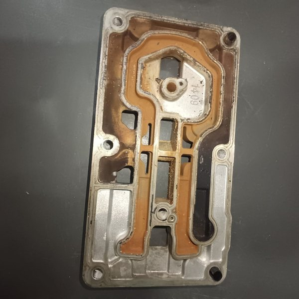
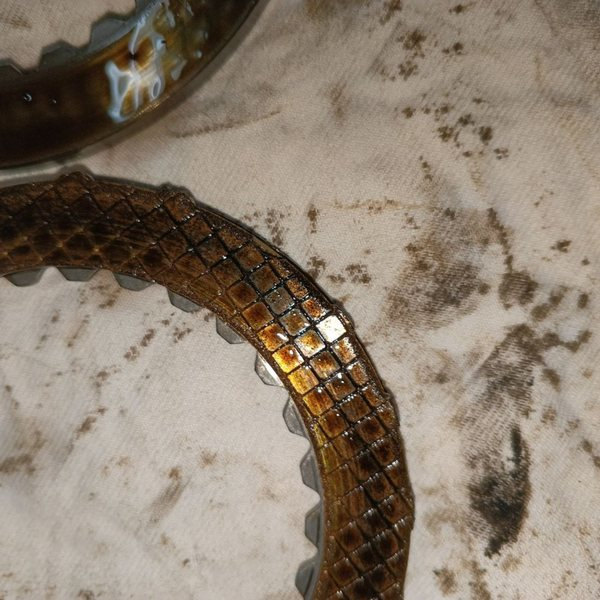
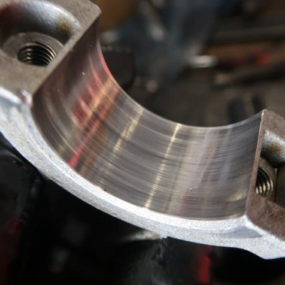
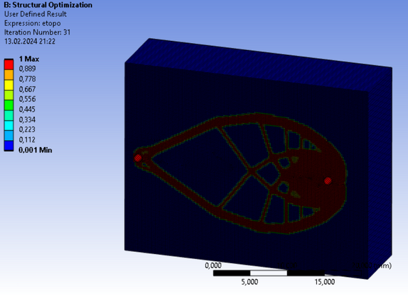
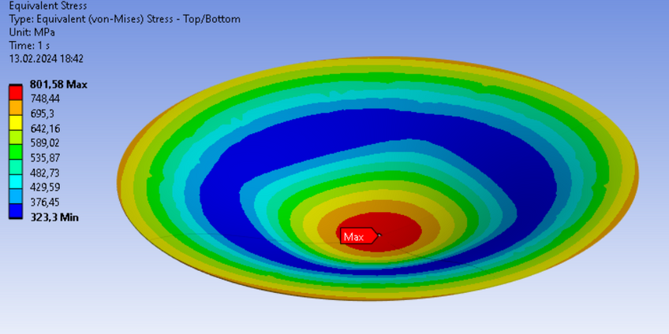
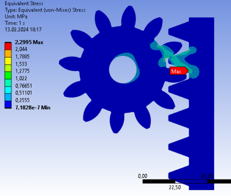
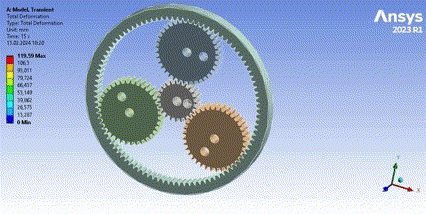

Eyl 2025 – devam
VADEN Original
Ürün Geliştirme ve Satış Sonrası Müh.
Yurt dışı şikâyetlerinde kök neden analizi, revizyon yönetimi ve araç üstü validasyon testleri.
Yapısal ve akış analizi odaklı makine mühendisi. ANSYS ve SolidWorks ile savunma, tarım makineleri ve ağır vasıta projeleri.
KTO Karatay Üniversitesi Makine Mühendisliği bölümünü bölüm üçüncüsü olarak tamamladım; şu anda Necmettin Erbakan Üniversitesi'nde tezli yüksek lisans yapıyorum.
Üniversite yıllarımdan itibaren ANSYS ve SolidWorks ile makine parçalarının dayanım, titreşim ve hava akışı analizleri üzerine çalıştım; bu çalışmaları savunma, tarım makineleri ve ağır vasıta projelerinde uyguladım. TEKNOFEST'te elektrikli araç takımımızın mekanik tasarım kaptanlığını üstlendim; TUSAŞ LIFT-UP projelerinden biri olan bitirme projemde savaş uçağı kuyruklarındaki titreşimleri inceledim.
Şu anda Türkiye'nin 81., Konya'nın en büyük Ar-Ge merkezine sahip VADEN'de ağır vasıta havalı grup ürünlerinin satış sonrası teknik süreçlerini yönetiyorum. Yabancı müşterilerle İngilizce iletişim kurarak şikâyet analizi, kök neden tespiti, revizyon yönetimi ve araç testlerinin raporlanmasında görev alıyorum. Hedefim, bu deneyimi üniversiteden beri hedeflediğim analiz mühendisliği alanına taşımak.
Ürün Geliştirme ve Satış Sonrası Müh.
Yurt dışı şikâyetlerinde kök neden analizi, revizyon yönetimi ve araç üstü validasyon testleri.
Analiz Mühendisi · Stajyer
Makineli top yapısal testinde strain gage ve ivmeölçer yerleşimi; 11 cıvata modelleme yönteminin karşılaştırması.
Analiz Müh. · Eğitim Asistanı
ANSYS Mechanical eğitimlerine asistanlık; firma ürünlerinde statik ve dinamik analizler.
Yurt dışı müşterilerimizden gelen garanti taleplerini, ürün geliştirme ve müşteri memnuniyetini esas alarak inceliyoruz. Elde ettiğimiz sonuçları yorumlayıp ilgili birimlere kök neden analizi raporları sunuyor, üründeki üretim hatalarının en aza indirilmesine katkı sağlıyoruz. Bu süreçte sanayideki ustalar ve yetkili servislerle birlikte çalışarak ürünlerle ilgili güncel bilgileri sürekli takip etme fırsatı buldum; başta kompresörler olmak üzere ağır vasıta araç sistemlerinde geniş bir bilgi birikimi edindim.



Necmettin Erbakan Üni., Makine Müh. (tezli)
KTO Karatay Üni., Makine Müh. — %30 İngilizce, tam burslu, MÜDEK akrediteli
Numesys CFD Kampı (2026–) · İleri SolidWorks (2023) · ANSYS Bilgisayar Destekli Analiz (2022–24)
Akademik, takım ve endüstriyel projelerden seçmeler. Görsellerin hepsi bu çalışmaların kendi analiz çıktıları ve fotoğraflarıdır.
KTO Karatay Üniversitesi bitirme projesi olan bu çalışma, TUSAŞ LIFT-UP projelerinden biridir. İkiz kuyruklu savaş uçaklarının belirli hücum açılarında oluşturduğu türbülansın kuyruk kanatlarında yol açtığı titreşimler incelenmiştir. Hava akışı bilgisayarda modellenmiş, kuyruğun titreşim davranışı alüminyum bir prototip üzerinde modal testle doğrulanmıştır.
Mekanik tasarım ve optimizasyon kaptanı olarak aracın şase ve kabuk tasarımı, kabuk aerodinamiği ve şase dayanım analizleri yürütülmüştür. Kabuk köpük kalıptan kompozite, şase profil kesiminden kaynağa kadar takımca üretilmiştir.
Hawkeye takımıyla 2023 yazında Teknofest Savaşan İHA kategorisi için başlanan projede, uçağın tüm dış yapısı SolidWorks'te tasarlanmıştır. Proje, tasarım aşamasının ardından takım içi nedenlerle sonlandırılmıştır.
Araç üzerine yerleştirilen ve uzaktan kumanda edilen 20 mm'lik bir silah sisteminde, atış anında oluşan yaklaşık 50 tonluk geri tepme kuvveti hesaplanmış, yay ve sönümleyicilerin darbeyi nasıl yumuşattığı incelenmiş ve taşıyıcı kolun dayanımı kontrol edilmiştir. Yapı saniyede 3 atış altında güvenli sınırlar içinde kalmıştır. Tasarım hazır alınmış, çalışmanın odağı analiz olmuştur.
Sesin 7,4 katı hızla uçan bir scramjet motorunun içindeki hava akışı ANSYS Fluent ile incelenmiştir. Motora giren havanın şok dalgalarıyla nasıl sıkıştığı, şokların nerede oluştuğu ve 0° ile 5° hücum açılarında motora etkiyen kuvvetlerin nasıl değiştiği hesaplanmıştır. Şok dalgalarının doğru yakalanması için hesaplama ağı bu bölgelerde otomatik olarak sıklaştırılmıştır.
Kesitteki renkler Fluent sonucudur. Parçacıklar bu sonuçtaki hıza göre hareket eder; şoktan geçtikleri yerde yavaşlayıp sıkışırlar.



